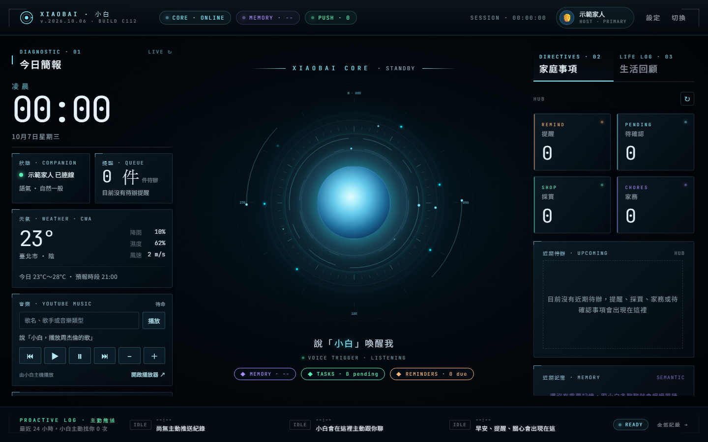
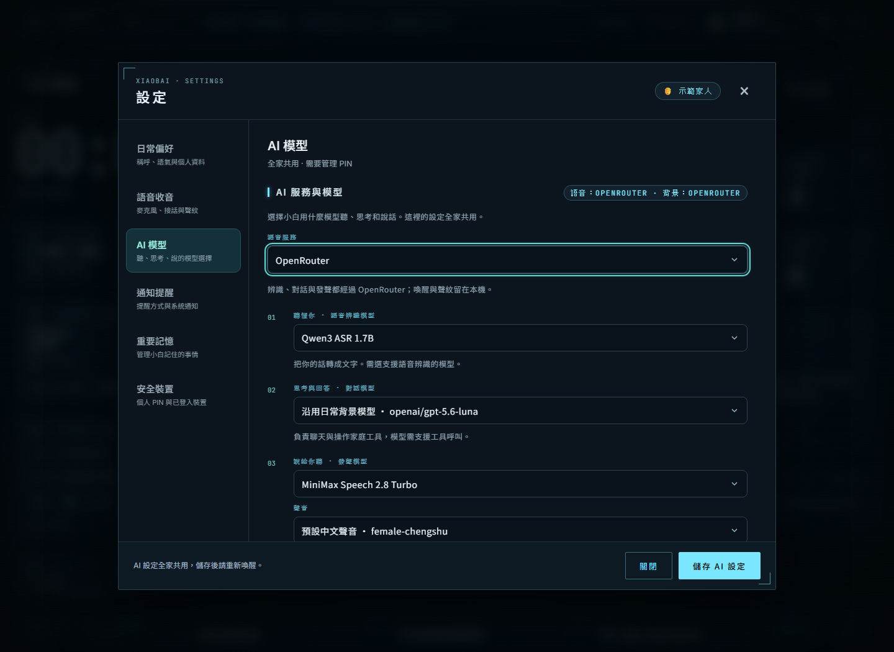
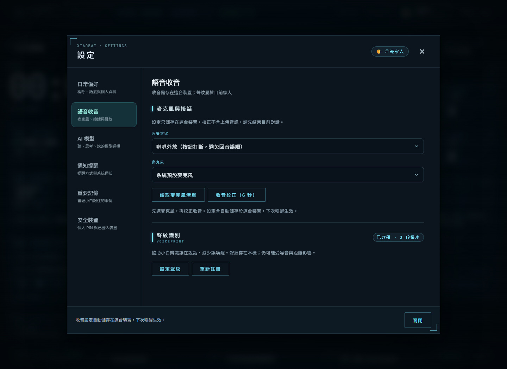
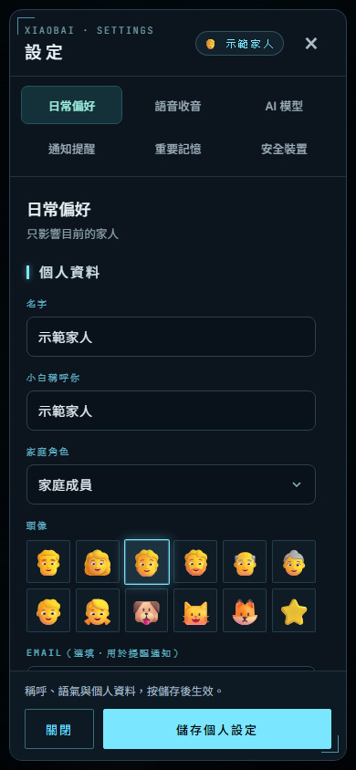

從一句「小白」，開始把家裡的小事接起來。
用聲音聊天、記住偏好、安排提醒，也把待辦、生活回顧和音樂放在同一個地方。

新版首頁介面示意 · 使用測試資料，非真實家人紀錄
最初的想法很單純：做一個能用聲音叫醒、能陪家人處理日常小事的助理。慢慢加上家人 Profile、記憶、提醒、採買和家務，再把這些事情整理成可以回頭看的生活紀錄。
你可以說「三十分鐘後提醒我關火」、「採買清單加一瓶牛奶」，或問「我還有什麼沒收尾？」小白會把相關工具和記憶接起來，讓一句話能接著變成提醒、待辦或查詢結果。
原本的藍色核心，做得更清楚。保留三欄與軌道感，重新調整光影、面板、文字和手機布局。天氣改成容易看的重點資料，音樂也有直接可用的控制入口。
設定整理成六個分類。日常偏好、語音收音、AI 模型、通知提醒、重要記憶、安全裝置。模型可以用選單挑選，也能填自訂 ID；辨識、對話、發聲和聲音選擇集中管理。
語音新增 OpenRouter 通道。辨識、對話與發聲可透過同一個 OpenRouter key 串接不同模型，同時保留 OpenAI Realtime 作為可切換的通道。
電腦上雙擊啟動程式，等服務就緒後會自動開啟頁面。手機、平板也能連到家中的小白主機；家人先選自己的 Profile，再使用對應的偏好和記憶。
點圖片可放大查看。以下為 C112 介面與示範家人資料，模型選項是介面示例。



| 小白主機 | Windows 電腦執行 Python 後端；音樂控制使用主機上的 YouTube Music App |
| 操作裝置 | 電腦、手機、平板瀏覽器；目前主要驗證 Chrome／Chromium 環境 |
| 連線方式 | 主機本機頁面可使用 localhost；手機連線需配置 HTTPS 並授權麥克風 |
| AI 服務 | 使用所選的 OpenRouter 或 OpenAI API 憑證；雲端模型需要網路，API 費用另計 |
| 開放對象 | 家庭內部使用，目前不提供公開下載 |
目前是 C112 開發版。首頁、六分類設定與音樂控制已完成程式更新，桌面／手機介面與模擬語音、控制流程已驗證。真實收音、音色、延遲及歌曲播放仍待實機驗收；這裡展示的是開發進度。